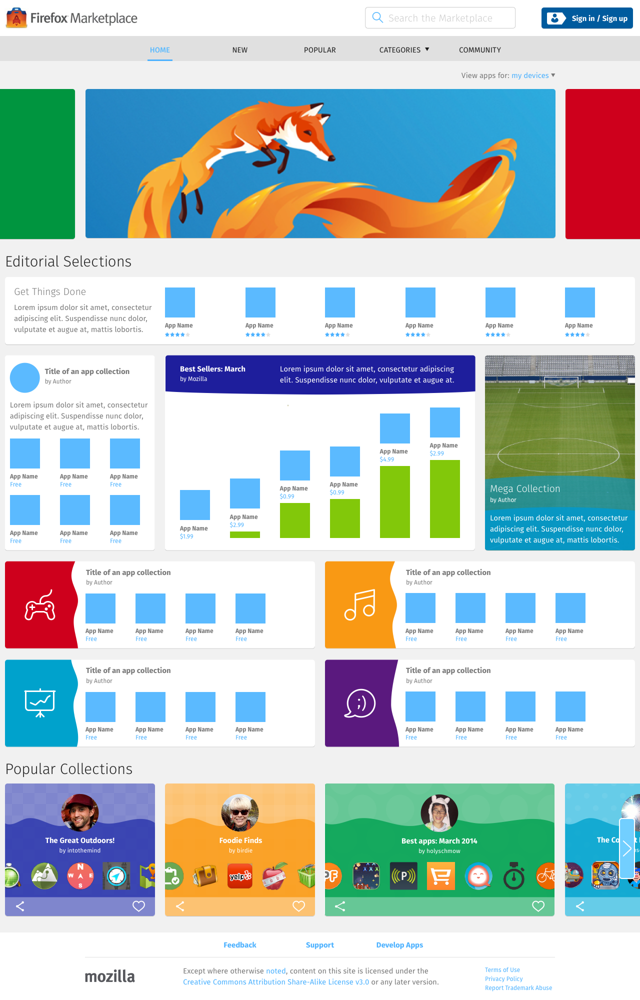

<div class="container">
	<div class="row">
		<div class="col-sm-12 col-md-12 col-lg-12">
			<h1>Home – The Feed</h1>
			
			<p class="longText">The home page on every platform is The Feed: a dynamic list of apps content created by the Marketplace Editorial Staff using the available feed unit types.</p>
			
			<p class="longText">If the user is on a partner cell network, the top unit in the display is always going to be the partner's Operator Shelf unit.</p>
			
			<p class="longText">As the screen space grows from 4 columns (mobile), to 8 columns (tablet), and to 12+ columns (desktop), the content of the feed stays consistent, but its display changes significantly.</p>
			  
		  <h3 class="specItem">Mobile</h3>
		  
		  
		  
		  <ol class="longText">
		    <li>The feed displays as a vertical scrolling list.</li>
		    <li>All feed unit is 4 columns wide.</li>
		    <li>Each row may contain only 1 feed unit.</li>
		  </ol>
		  
		  <h3 class="specItem">Tablet</h3>
		  
		  
		  
		  <ol class="longText">
		    <li>The feed displays as a vertical scrolling list, but in certain parts, it’s possible to use the directional arrows to navigate left and right through the carousel of feed units.</li>
		    <li>A feed unit can be:
		      <ul>
		        <li>4 columns wide</li>
		        <li>8 columns wide</li>
		      </ul>
		    </li>
		    <li>Each row may contain either 1 or 2 feed units.</li>
		  </ol>
		  
		  <h3 class="specItem">Desktop</h3>
		  
		  
		  
		  <ol class="longText">
		    <li>Like the tablet layout, it’s possible to use the directional arrows in certain parts of the feed to navigate left and right.</li>
		    <li>A feed unit can be:
		      <ul>
		        <li>4 columns wide</li>
		        <li>6 columns wide</li>
		        <li>8 columns wide</li>
		        <li>12 columns wide</li>
		        <li>16 columns wide</li>
		      </ul>
		    </li>
		    <li>Unlike the tablet or mobile layouts, the number of feed units on each row varies depending on the width of the window.</li> 
		    <li>For instance, on a screen that’s 1280 pixel wide, the layout will contain 16 columns. Therefore, each row may contain:
  		    <ul>
  		      <li>4 units at 4 columns each = 16 columns</li>
  		      <li>2 units at 8 columns each = 16 columns</li>
  		      <li>1 unit at 8 columns, plus 2 units at 4 columns each = 16 columns</li>
  		      <li>2 units at 4 columns each, plus 1 unit at 6 column, plus overflow space worth 2 columns on one side = 16 columns</li>
  		      <li>1 unit at 12 columns, plus overflow space worth 4 columns on either side = 16 columns</li>
  		      <li>1 unit at 16 columns.</li>
  		    </ul>
		    </li>
		  </ol>
			  
		</div>
	</div>
	<!-- Pagination. If you have more than one page, set the multipage variable in the Frontmatter to true. Editing the pagination code happens in /_includes/homePagination.html.
		NOTE: This is currently broken in the Jekyll ver of this template.
		-->
		{% if page.multipage %}
			{% include homePagination.html %}
		{% endif %}
